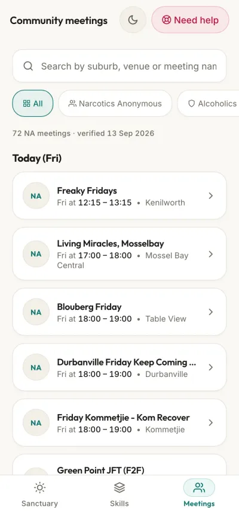

NA and AA meetings in Cape Town: how to find a room
NA and AA meetings in Cape Town are free and run every day, across the city and the Western Cape, in person and online. You don't need to sign up, pay or speak. This page explains how to find one on the fellowships' own lists, what happens when you walk in, and who to call if you can't get to a room tonight.
If you are in danger, call 112 or the Suicide Crisis Helpline on 0800 567 567.
To talk to someone in recovery now: NA on 0861 00 6962 or AA on 0861 435 722 (24 hours). Visiting from abroad? See help for visitors.
Where to find a meeting
- NA (Narcotics Anonymous): NA Western Cape's meeting list. Filter by day first, then by area. There are separate lists for in-person and online meetings.
- AA (Alcoholics Anonymous): AA South Africa's meeting list. Choose the Western Cape.
- On your phone, offline: the WiseMind Companion app keeps a dated copy of the NA Western Cape list, with directions. For AA it links to AA's own list.
Meetings move and close, and old lists stay online for years. Check the official list on the day you go, or call the fellowship line to confirm.
NA or AA?
AA is for people who want to stop drinking. The only requirement for membership is a desire to stop drinking.
NA is for anyone with a drug problem, whatever the drug. NA counts alcohol as a drug, so people who drink and use, or who aren't sure which is the problem, are welcome there too. Many people try both before they find the room that feels like theirs.
What happens at your first meeting
Every group runs its own meeting, but most follow a similar shape:
- Members run it themselves. One person chairs, and it usually opens with a few short readings about what the fellowship is.
- People share: they talk about their own experience of using, stopping and staying stopped, rather than giving advice.
- Newcomers are usually invited to say they are new, so people can welcome them. You can say just your first name, or nothing at all.
- You never have to speak. Listening is enough.
- There are no fees. A basket may go round, but giving is voluntary, and you don't have to.
- It is spiritual, not religious. NA says the Serenity Prayer at its meetings, and welcomes people of any faith or none.
- You are welcome even if you are still using or drinking. Wanting to stop is enough.
Arrive a few minutes early if you can, and stay a few minutes after. That is when people introduce themselves, offer phone numbers and tell you which other meetings are good.
Words you'll hear: a room is a meeting; a share is what someone says; a sponsor is a member who helps you through the steps; a home group is the meeting you go to every week; clean time or sober time is how long since your last drug or drink; and "keep coming back" means exactly that.
Open and closed meetings
Closed meetings are for people who have, or think they might have, a drug or drinking problem. Open meetings also welcome partners, family, friends and anyone affected or curious. The list says which is which. If you are worried about someone, an open meeting is a good way to understand what they are going through.
NA's daily online meeting "Just For Today CPT" is open to non-addicts on the first Monday of each month.
Online meetings
NA Western Cape runs online meetings on Zoom every evening; times and links are on its online meetings list. There is no sign-up. They help if you have no transport, live outside the city, are awake late, or aren't ready to walk into a room yet.
Visiting Cape Town?
Meetings here welcome visitors. Say you're visiting and where you're from; people will often tell you which nearby meetings are easiest to reach.
- Where: NA's list has meetings in the city centre, Green Point, Sea Point, Observatory, Muizenberg and Stellenbosch, among many others.
- From a foreign phone: 0861 numbers may not connect from a foreign SIM. Use WhatsApp instead: NA Western Cape on +27 66 371 5196 or +27 63 744 7049. AA's Cape Town office is on +27 21 418 0908.
- Your own fellowship, online: NA's worldwide online meeting search lists meetings in many languages and time zones.
- Emergencies: 112 works from any mobile phone in South Africa.
If there is no meeting tonight
- Call or message a fellowship line (below). People in recovery answer.
- Join an online meeting.
- Get through the next hour with urge surfing or the STOP skill.
- Call the Substance Abuse Helpline on 0800 12 13 14.
Fellowship and helpline contacts
Checked against each organisation's own website on 11 October 2026.
- NA Western Cape phoneline0861 00 6962Narcotics Anonymous
- NA Western Cape WhatsApp066 371 5196or 063 744 7049, or email wc-helpline@na.org.za
- AA South Africa helpline0861 435 722Alcoholics Anonymous, 24 hours
- AA Cape Town office021 418 0908westerncape@aasouthafrica.org.za
- Emergency services112From any mobile, 24 hours
- Suicide Crisis Helpline0800 567 567SADAG, 24 hours
- Substance Abuse Helpline0800 12 13 1424 hours, or SMS 32312
- Cipla Mental Health Helpline0800 456 789SADAG, 24 hours
SADAG numbers checked against SADAG's list on 26 September 2026.
Meetings in your pocket

Looking for an app to find NA meetings? WiseMind Companion keeps the NA Western Cape list on your phone, works offline, shows the date the list was checked, and gives you directions. It is free, and in beta on Android: join the testers.
Keep coming back
One meeting won't fix everything, and it doesn't have to. Most people try a few rooms before one feels like home. Meetings work well alongside a doctor or counsellor, especially if you are stopping alcohol or drugs after heavy use, because stopping suddenly can be dangerous.
Sources
Narcotics Anonymous Western Cape: home and contacts, What happens at an NA meeting?, online meetings.
Narcotics Anonymous World Services: IP #1, Who, What, How, and Why.
Alcoholics Anonymous South Africa: contact, meetings list.